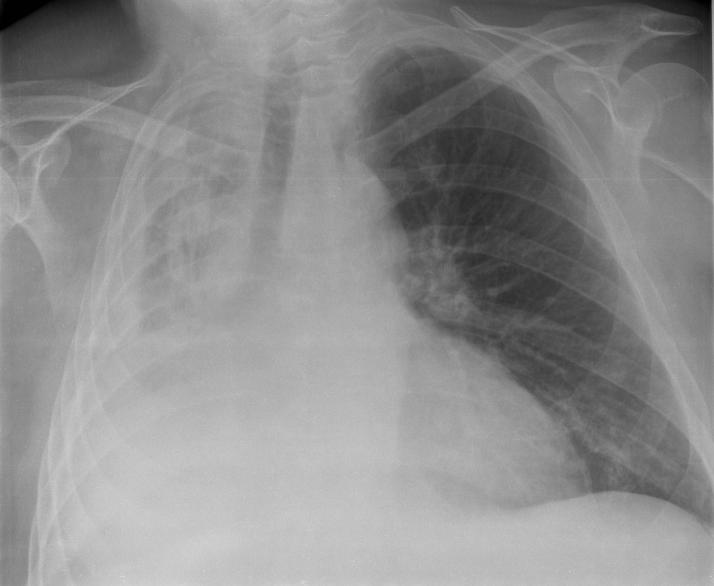

Ficha del catálogo
Atelectasia pulmonar
- Sistema
- Respiratorio
- Modalidad
- RX
- Región
- Tórax
- Dificultad
- Intermedio
Es la pérdida de volumen de una parte o de la totalidad del pulmón por colapso alveolar. Puede deberse a obstrucción bronquial, compresión externa, cicatrización o falta de surfactante. Reconocerla es esencial porque una atelectasia lobar en un adulto fumador obliga a descartar una lesión endobronquial.
Técnica
Radiografía de tórax en proyecciones posteroanterior y lateral, comparando siempre con estudios previos. La tomografía identifica la causa cuando la obstrucción es el mecanismo sospechado.
Qué observar
- Desplazamiento de las cisuras hacia la zona colapsada
- Elevación del hemidiafragma del lado afectado
- Desviación de la tráquea y del mediastino hacia el lado del colapso
- Aumento de densidad con silueta triangular de vértice hiliar
- Apiñamiento de los vasos y de los bronquios dentro del segmento colapsado
- Hiperinsuflación compensadora de los lóbulos vecinos
Hallazgos
Opacidad con pérdida de volumen y signos de retracción que desplazan cisuras, mediastino y diafragma hacia el lado afectado.
Perlas
La clave que separa la atelectasia de la neumonía o del derrame es la dirección del desplazamiento: La atelectasia atrae las estructuras hacia sí, mientras que los procesos que ocupan espacio las empujan hacia el lado contrario.
Diagnóstico diferencial
- Neumonía lobar
- Mantiene o aumenta el volumen y no desplaza cisuras hacia sí.
- Derrame pleural masivo
- Desplaza el mediastino hacia el lado contralateral.
- Neumonectomía previa
- Antecedente quirúrgico con ausencia completa de pulmón y cambios crónicos.
Simuladores
- Elevación diafragmática por parálisis frénica
- Consolidación con broncograma
- Masa pleural extensa
Por modalidad
- RX
- Detecta el colapso y sus signos de retracción
- TC
- Identifica la causa obstructiva y valora el parénquima distal
Protocolo
Radiografía en dos proyecciones. Tomografía con contraste si se sospecha lesión endobronquial o si el colapso persiste sin explicación.
Clasificación
Se distinguen mecanismos obstructivo, compresivo, cicatricial, adhesivo y por relajación, y morfológicamente formas lobar, segmentaria, laminar y redonda.
Errores frecuentes
- No investigar la causa de una atelectasia lobar en un adulto fumador
- Confundir el colapso del lóbulo medio con derrame encapsulado
- Informar sin comparar con estudios previos

atelectasia colapso pulmonar perdida de volumen cisuras obstruccion bronquial torax